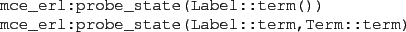
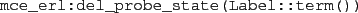
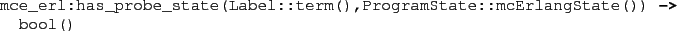
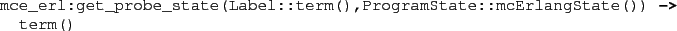

Next: Some Available Monitors Up: Observational Power of Monitors Previous: Observational Power of Monitors Contents
Working with probe actions in LTL formulas can sometimes be difficult, as we have manually ``remember'' the occurrence of important actions in the formula.
Instead of using probe actions we can use so called ``probe states''. In contrast to probe actions, which are enabled in a single transition step only, such probes are persistent from the point in the execution of the program when they are enabled, until they are explicitly deleted. Internally they are stored in the global system dictionary (accessible using the McErlang API functions @gget/1@, et.c.).
A probe state is asserted using the functions

A probe state must be explicitly retracted using the function

when it no longer should hold.
We can test for the existence of a probe state using
the function

and the term corresponding to a probe state label for an enabled probe state
can be retrieved using the function:

2010-07-05